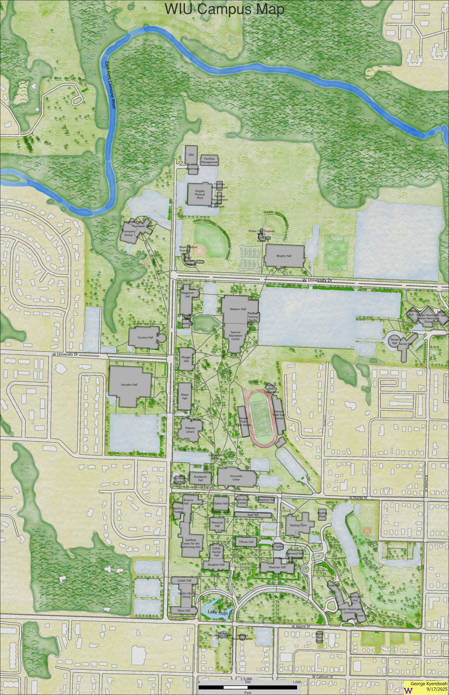

About Me
Geospatial professional with experience in cadastral surveying, GNSS data collection, boundary verification, and spatial data management. Skilled in integrating field survey data into GIS platforms and developing Python-based workflows for spatial analysis. Strong hybrid background bridging field operations and geospatial data analysis.
Contact Me Download Resume LinkedInTechnical Skills
- GIS: ArcGIS Pro, ArcGIS Online, QGIS
- Surveying: Autocad, GNSS (Topcon), Total Station (Sokkia), Boundary & Cadastral Survey
- Programming: Python (GIS workflows), SQL (data extraction)
- Data: Spatial Analysis, Raster Processing, CAD Conversion
Experience Highlights
- Led regional team in establishing and validating survey control pillars.
- Processed GNSS survey data and integrated results into GIS databases.
- Converted raster floor plans into CAD formats for indoor spatial mapping.
- Supported recruitment and technical training of survey personnel.
Projects
Parcel & Cadastral Data Management System
Structured and validated parcel datasets integrating GNSS control points, boundary verification workflows, and GIS database management to improve spatial accuracy and land record integrity.

GNSS Field-to-GIS Integration Pipeline
Processed Topcon GNSS survey data, performed quality validation, and integrated outputs into ArcGIS environments for spatial analysis and cartographic production.

Raster-to-CAD Indoor Mapping Workflow
Developed a structured workflow converting raster floor plans into organized CAD layers for indoor mapping and facility management integration.